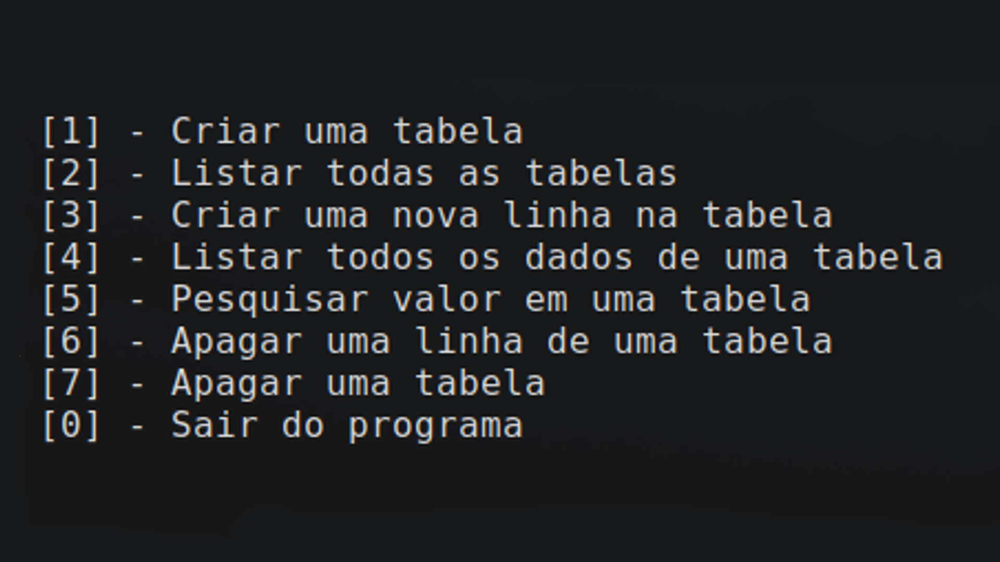
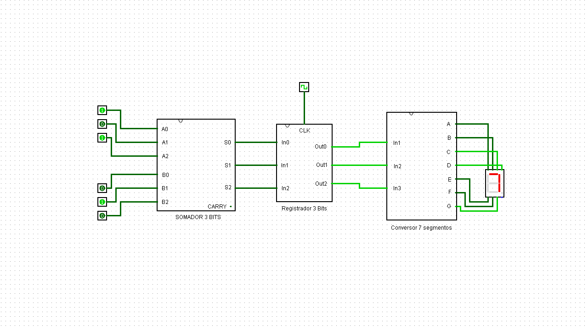
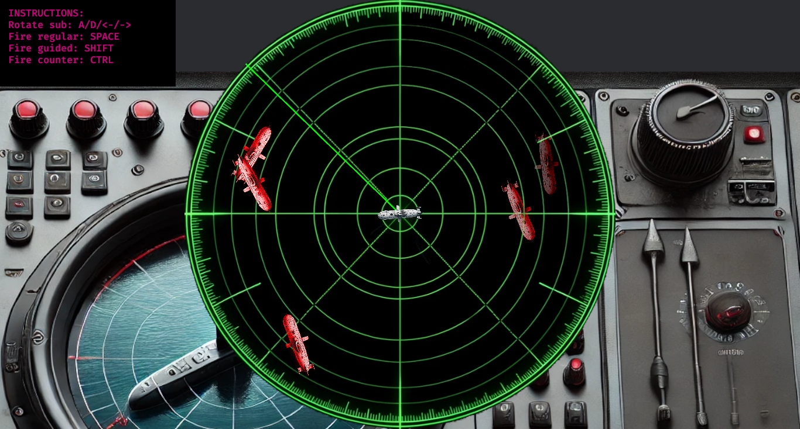
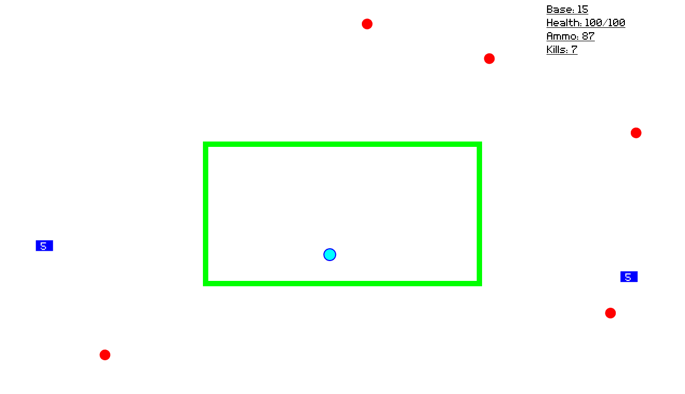

Guilherme Ferreira
Desenvolvedor
Sou estudante de Tecnologia da Informação pela UFRN, apaixonado por tecnologia e inovação. Embora ainda não tenha experiência profissional, venho desenvolvendo uma base sólida em áreas como banco de dados, programação, redes de computadores e desenvolvimento web através das minhas experiências acadêmicas e projetos pessoais, que são os que mais contribuem na minha visão.
Languages I Already Used


My Projects

SGBD
O sistema simula um banco de dados simples com funcionalidades como criação e exclusão de tabelas, inserção, listagem, busca e remoção de dados. Todo o gerenciamento é feito via terminal, com um menu interativo que permite ao usuário manipular tabelas e registros de forma prática.

Display de 7 Segmentos
Projeto de circuitos lógicos que implementa um somador de dois números de 3 bits. Os valores são armazenados em registradores e, após a operação de soma, o resultado é exibido em um display de 7 segmentos. Todo o circuito foi desenvolvido pelo Logisim utilizando portas lógicas, utilizando aritmética binária. O projeto foi essencial para compreender na prática o funcionamento de sistemas digitais e a base da arquitetura de computadores.

Miles Below Darkness
Foi desenvolvido com a linguagem Rust utilizando a engine Bevy. O Bevy tem uma abordagem de ECS (Entity, Component, System) que é ideal para jogos com muitas entidades, pois permite melhor organização do código, maior reutilização de componentes e alta performance na execução dos sistemas. No jogo, você controla um submarino na visão de um radar, deve atacar seus inimigos e se defender por meio de torpedos normais, teleguiados e de contra-ataque que procuram torpedos inimigos.

Eternal Siege
É um jogo feito em C++ utilizando a biblioteca gráfica SFML (v2.6). Nele você deve proteger a si mesmo e também a sua base de inimigos que surgem constantemente. O jogador pode se movimentar pelo mapa e atirar, assim como seus inimigos, que ao morrerem, tem a chance de soltar munição no chão.